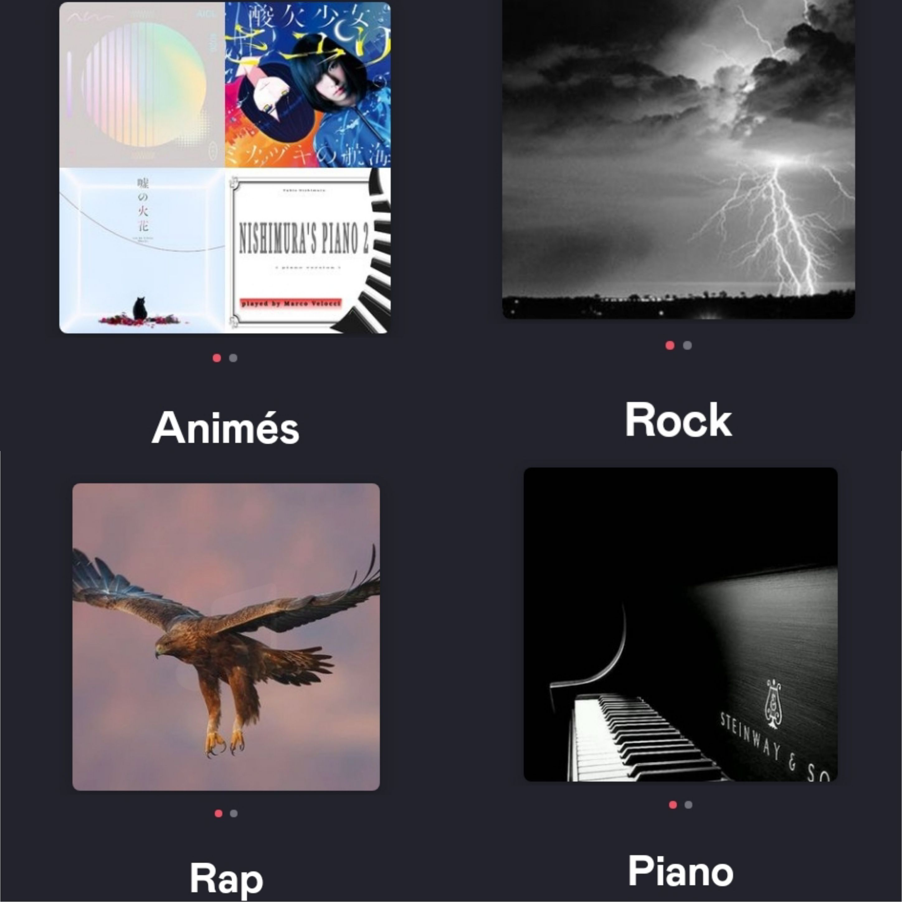

Bonjour, et bienvenue sur ma page que j'ai codée moi-même.
Je m'appelle Eva Colliandre, j'ai 19 ans et je vais me présenter à travers cette page.
La culture japonaise m'intéresse beaucoup, je lis des mangas, je regarde des animés, je commence à apprendre la langue, j'adorerais aller visiter le Japon. Mais je m'intéresse aussi aux principaux pays où l'on parle anglais comme l'Angleterre, les Etats-Unis et l'Australie que j'aimerais aussi beaucoup visiter.
J'écoute des types de musiques assez variés allant de la musique classique au hard rock en passant par la pop ou encore le rap...
Je fais du piano depuis neuf ans.
J'aime beaucoup le dessin. Je fais du pixel-art.
En bref j'apprécie beaucoup l'art et tous les types d'art me sont agréables. J'adore visiter des musées ou des expositions.
Je suis curieuse et j'aime aller au théâtre, cinéma, opéra, ballet...
En littérature, j'ai une préférence pour les romans, mais je lis aussi des essais philosophiques, des autobiographies, des bandes dessinées, des mangas, des ouvrages de développement personnel...
Ayant un bac scientifque, j'aprécie les sciences malgré le fait que ce soit très complexe et long d'assimilation.